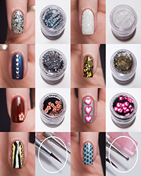

လက္ သည္း ေျခသည္း လွပ ေအာင္ ျပဳလုပ္ နည္း

၁။ ညွပ္ ပစ္ တာက လြယ္ ကူ ေပမယ့္ လက္ သည္း၊ ေျခသည္း ကို တံစဥ္း ႏွင့္သာ လားရာတစ္ ဘက္ တည္း သို႔ ပြတ္ တိုက္ ပါ။
၂။ ဗီတာမင္ အီးကို မွန္ မွန္ လိမ္း ပါ။
၃။ လက္ သည္း ဖ်က္ ေဆးကို မၾကာခဏ မသံုးပါနဲ႔။
၄။ ပန္း ကန္ ေဆး ေသာအခါ၊ သစ္ ပင္ စိုက္ ေသာအခါမ်ိဳးတြင္ ဆိုင္ ရာလက္ အိတ္ ဝတ္ ဆင္ ျခင္း က ဓာတုဓာတ္ ေတြ၊ မသန္႔ ရွင္း ေသာ အရာ ေတြ လက္ ကို ထိခိုက္ ျခင္း က ကာကြယ္ ေပးႏိုင္ ပါတယ္။
၅။ ေျခသည္း ေတြကို တံစဥ္း ႏွင့္ တိုက္ ရာမွာ မ်ဥ္း ေျဖာင့္ အတိုင္း သာ ပြတ္ တိုက္ ပါ။ အနား ေတြကို ေကြးျပီး ညွပ္ ျခင္း က ေျခစြယ္ ငုတ္ ျခင္းကို ျဖစ္ ေစႏိုင္ လို႔ပါ။
၆။ ေျခသည္း လက္ သည္း ေတြကို သံလြင္ ဆီလိမ္း ေပးပါက ကၽြတ္ ဆတ္ ျခင္း ကို ေလ်ာ့နည္း ေစပါတယ္။